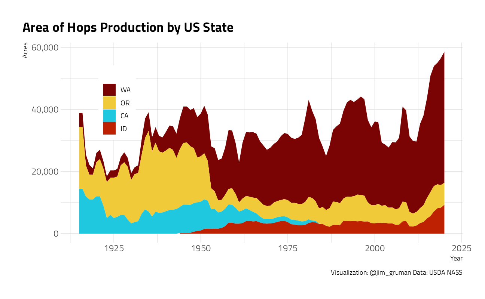
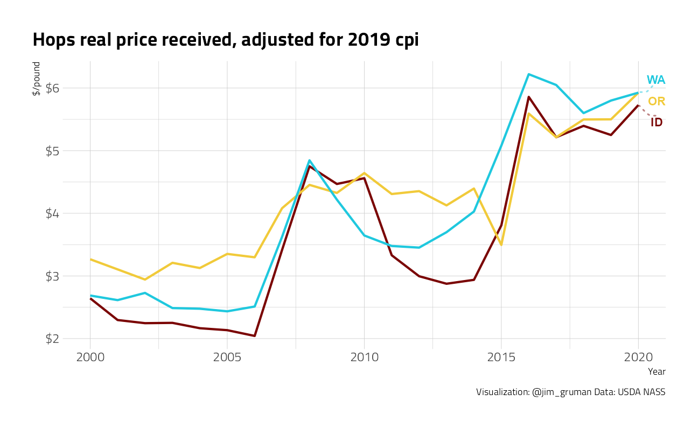
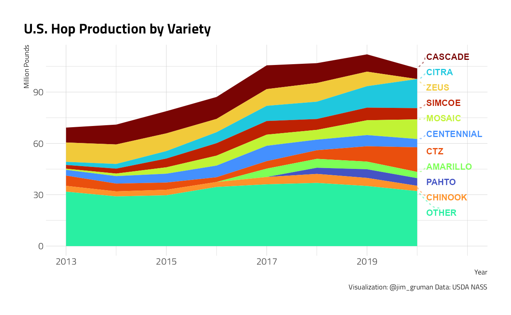
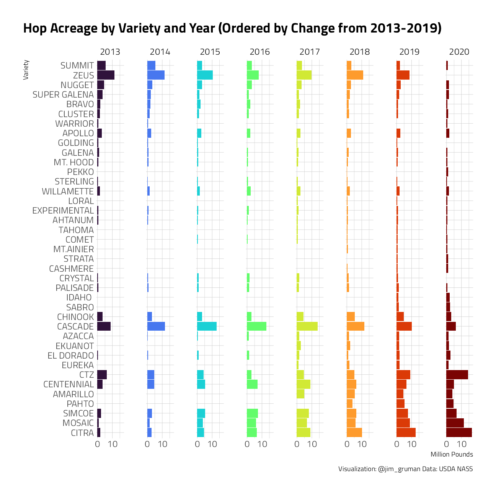

Hops
Jim Gruman
September 24, 2020
Last updated: 2021-09-13
Checks: 7 0
Knit directory: myTidyTuesday/
This reproducible R Markdown analysis was created with workflowr (version 1.6.2). The Checks tab describes the reproducibility checks that were applied when the results were created. The Past versions tab lists the development history.
Great! Since the R Markdown file has been committed to the Git repository, you know the exact version of the code that produced these results.
Great job! The global environment was empty. Objects defined in the global environment can affect the analysis in your R Markdown file in unknown ways. For reproduciblity it’s best to always run the code in an empty environment.
The command set.seed(20210907) was run prior to running the code in the R Markdown file. Setting a seed ensures that any results that rely on randomness, e.g. subsampling or permutations, are reproducible.
Great job! Recording the operating system, R version, and package versions is critical for reproducibility.
Nice! There were no cached chunks for this analysis, so you can be confident that you successfully produced the results during this run.
Great job! Using relative paths to the files within your workflowr project makes it easier to run your code on other machines.
Great! You are using Git for version control. Tracking code development and connecting the code version to the results is critical for reproducibility.
The results in this page were generated with repository version 4c664ed. See the Past versions tab to see a history of the changes made to the R Markdown and HTML files.
Note that you need to be careful to ensure that all relevant files for the analysis have been committed to Git prior to generating the results (you can use wflow_publish or wflow_git_commit). workflowr only checks the R Markdown file, but you know if there are other scripts or data files that it depends on. Below is the status of the Git repository when the results were generated:
Ignored files:
Ignored: .Rhistory
Ignored: .Rproj.user/
Ignored: catboost_info/
Ignored: data/2021-09-08/
Ignored: data/acs_poverty.rds
Ignored: data/fmhpi.rds
Ignored: data/grainstocks.rds
Ignored: data/hike_data.rds
Ignored: data/us_states.rds
Ignored: data/us_states_hexgrid.geojson
Ignored: data/weatherstats_toronto_daily.csv
Untracked files:
Untracked: code/work list batch targets.R
Untracked: figure/
Note that any generated files, e.g. HTML, png, CSS, etc., are not included in this status report because it is ok for generated content to have uncommitted changes.
These are the previous versions of the repository in which changes were made to the R Markdown (analysis/Hops.Rmd) and HTML (docs/Hops.html) files. If you’ve configured a remote Git repository (see ?wflow_git_remote), click on the hyperlinks in the table below to view the files as they were in that past version.
| File | Version | Author | Date | Message |
|---|---|---|---|---|
| Rmd | 4c664ed | opus1993 | 2021-09-13 | direct label prices, use viridis H colors |
Adapted from Hoppiness by Aaron Smith @ASmithUCD
Beer is a simple beverage. It has only four ingredients: malt, water, yeast, and hops. This simplicity belies a recent dramatic change in the relative proportions of these ingredients.
An IPA from your favorite craft brewery uses up to 50 times as much hops per pint as America’s leading beer, Bud Light. As craft brewing has grown, hops have become a booming crop even as total beer consumption declines.
US beer consumption has dropped by more than 25% in the past 25 years, and the rate of decline is speeding up. Beer sales were down 2% in 2019 compared to the year before. Share prices of Anheuser-Busch InBev and Miller-Coors, which between them supply two thirds of the US market, are down more than 50% in the past five years.
knitr::include_graphics("https://www.nbwa.org/sites/default/files/AdobeStock_205461433_1.jpeg",
error = FALSE)
This aggregate decline masks substantial growth in craft beer production. In 2019, craft beer comprised 13.6% of the US beer market by volume, up from less than 5% market share in 2010. Although its growth rate has slowed in recent years, craft beer was still growing at 4% per year before the coronavirus pandemic.
The pandemic has reduced on-site consumption at craft breweries. If total craft beer production has also declined, we would expect a reduction in hops use, which would cause inventories to accumulate. The National Agricultural Statistics Service (NASS) of USDA reports hop inventories declined by 50 million pounds from March to September this year, which suggests 50 million pounds were used to brew beer in those months. This is the same as the March to September inventory decline in 2019.
The US and Germany produce 80% of the world’s hops. The Pacific Northwest produces essentially all US hops, with most of that now in Washington’s Yakima Valley. California had significant hop acreage until the mid 1980s. Since 2012, hop acreage in the Yakima Valley has increased by 80% to 41,000 acres along with the craft-brewing boom.
df %>%
filter(short_desc == "HOPS - ACRES HARVESTED") %>%
filter(!state_alpha == "US") %>%
mutate(state_alpha = fct_reorder(state_alpha, desc(Value))) %>%
ggplot(aes(x = year, y = Value, fill = state_alpha)) +
geom_area() +
labs(fill = "State", x = "Year", y = "Acres") +
labs(
title = "Area of Hops Production by US State",
fill = "",
caption = "Visualization: @jim_gruman Data: USDA NASS"
) +
scale_y_continuous(labels = scales::comma_format()) +
expand_limits(y = 0) +
theme(
legend.position = c(0.14, 0.7),
legend.background = element_rect(color = "white")
)
The increase in demand for hops drove an increase in the price paid to hops growers.
df_cpi <- inflation_adjust(2019) %>%
mutate(year = as.integer(year))
df_price <- df %>%
filter(
year >= 1947,
short_desc == "HOPS - PRICE RECEIVED, MEASURED IN $ / LB"
) %>%
inner_join(df_cpi, by = "year") %>%
mutate(
avg_cpi = avg_cpi / pull(filter(df_cpi, year == 2019), avg_cpi),
rValue = Value / avg_cpi
)df_price %>%
filter(short_desc == "HOPS - PRICE RECEIVED, MEASURED IN $ / LB") %>%
filter(!state_alpha == "US") %>%
filter(year > 1999) %>%
ggplot(aes(x = year, y = rValue, color = state_alpha)) +
geom_line(size = 1, show.legend = FALSE) +
ggrepel::geom_text_repel(
data = . %>% filter(year == max(df_price$year)),
aes(
label = state_alpha,
color = state_alpha
),
direction = "y",
xlim = c(max(df_price$year), NA),
hjust = 1,
segment.size = .7,
segment.alpha = .5,
segment.linetype = "dotted",
box.padding = .4,
segment.curvature = -0.1,
segment.ncp = 3,
segment.angle = 20,
show.legend = FALSE,
max.overlaps = 40,
fontface = "bold"
) +
scale_y_continuous(labels = scales::dollar_format()) +
labs(color = "State", x = "Year", y = "$/pound") +
labs(
title = "Hops real price received, adjusted for 2019 cpi",
caption = "Visualization: @jim_gruman Data: USDA NASS"
)
Since 2013, NASS has reported production for 55 different varieties of hops. This is unusual, in that they do they report more than a few varieties for any other crop.
The US produced 112 million pounds of hops in 2019, of which the top 10 varieties made up about 70%. Citra is now the most produced variety, after recently overtaking Zeus and Cascade. New varieties, Pahto and Amarillo, recently entered the top 10.
df_variety <- df %>%
mutate(Value = if_else(is.na(Value), 0, Value)) %>%
filter(
str_detect(short_desc, "PRODUCTION, MEASURED IN LB"),
!str_detect(short_desc, "HOPS - PRODUCTION, MEASURED IN LB")
) %>%
group_by(year, short_desc) %>%
summarize(
prod = sum(Value, na.rm = TRUE),
.groups = "drop"
)
# Rank varieties by largest to smallest
large_varieties <- expand_grid(
year = unique(df_variety$year),
short_desc = unique(df_variety$short_desc)
) %>%
left_join(df_variety,
by = c("short_desc" = "short_desc", "year" = "year")
) %>%
group_by(short_desc) %>%
mutate(median_prod = median(prod, na.rm = TRUE)) %>%
select(year, short_desc, median_prod) %>%
ungroup()
patterns <- ", HBC |, YCR |, ADHA-|, VGXP0| R| TM|/|[1-9]"
df_variety %>%
full_join(large_varieties,
by = c("short_desc" = "short_desc", "year" = "year")
) %>%
mutate(
prod = if_else(is.na(prod), 0, prod),
variety = str_sub(short_desc, 7, -30),
variety = str_remove_all(variety, patterns),
variety = fct_lump_n(variety, n = 11, w = median_prod, other_level = "OTHER"),
variety = fct_reorder(variety, -median_prod)
) %>%
group_by(year, variety) %>%
summarize(
var_prod = sum(prod) / 1000000,
.groups = "drop"
) %>%
ggplot(aes(x = year, y = var_prod, fill = variety)) +
geom_area(show.legend = FALSE) +
ggrepel::geom_text_repel(
data = . %>% filter(year == max(df_variety$year)) %>%
mutate(value = cumsum(rev(var_prod))),
aes(
label = rev(variety),
y = value,
color = rev(variety)
),
direction = "y",
xlim = c(max(df_variety$year), NA),
hjust = 1,
segment.size = .7,
segment.alpha = .5,
segment.linetype = "dotted",
box.padding = .4,
segment.curvature = -0.1,
segment.ncp = 3,
segment.angle = 20,
show.legend = FALSE,
max.overlaps = 40,
fontface = "bold"
) +
scale_x_continuous(
limits = c(2013, 2021),
breaks = seq(2013, 2019, 2)
) +
labs(
x = "Year",
y = "Million Pounds",
title = "U.S. Hop Production by Variety",
caption = "Visualization: @jim_gruman Data: USDA NASS"
)
The plot below shows the top 40 U.S. hop varieties, ordered by the increase in production from 2013 to 2019. It shows the substantial growth in hops that are popular in craft beers, such as Citra, Mosaic, Simcoe, and Amarillo.
########### bar plot: Proportion of Production from top varieties
# Rank varieties by largest to smallest change from 2013-2019
large_changes <- df_variety %>%
pivot_wider(
names_from = year,
values_from = prod,
values_fill = 0
) %>%
mutate(change = `2019` - `2013`) %>%
select(short_desc, change)
df_variety %>%
full_join(large_varieties) %>%
# merge on variety rank variable
full_join(large_changes) %>%
# merge on change rank variable
mutate(variety = str_sub(short_desc, 7, -30)) %>%
mutate(
variety = str_sub(short_desc, 7, -30),
variety = str_remove_all(variety, patterns),
variety = fct_lump_n(variety, n = 40, w = median_prod, other_level = "OTHER"),
variety = fct_reorder(variety, -median_prod)
) %>%
filter(!variety == "OTHER") %>%
# delete other variety
mutate(prod = prod / 1000000) %>%
# change units for plot
ggplot(aes(y = reorder(variety, -change), x = prod, fill = year)) +
geom_bar(stat = "identity", show.legend = FALSE) +
scale_x_continuous(n.breaks = 3) +
labs(y = "Variety", x = "Million Pounds") +
facet_grid(cols = vars(year)) +
labs(
title = "Hop Acreage by Variety and Year (Ordered by Change from 2013-2019)",
caption = "Visualization: @jim_gruman Data: USDA NASS"
)
Hops were introduced to beer almost a thousand years ago to add bitterness and flavor. They also act as a preservative, which is the property that allegedly led George Hodgson to add large amounts of it to the original IPA for shipment to India in the 18th century. Three centuries later, the humble hop is the leading feature of the most vibrant segment of the beer market. The cool kids may think the hoppy-beer trend is out of hand, but there are few signs of a reduction in demand for hops.
sessionInfo()R version 4.1.1 (2021-08-10)
Platform: x86_64-w64-mingw32/x64 (64-bit)
Running under: Windows 10 x64 (build 19043)
Matrix products: default
locale:
[1] LC_COLLATE=English_United States.1252
[2] LC_CTYPE=English_United States.1252
[3] LC_MONETARY=English_United States.1252
[4] LC_NUMERIC=C
[5] LC_TIME=English_United States.1252
attached base packages:
[1] stats graphics grDevices utils datasets methods base
other attached packages:
[1] paletteer_1.4.0 blscrapeR_3.2.0 rnassqs_0.5.0 forcats_0.5.1
[5] stringr_1.4.0 dplyr_1.0.7 purrr_0.3.4 readr_2.0.1
[9] tidyr_1.1.3 tibble_3.1.4 ggplot2_3.3.5 tidyverse_1.3.1
[13] workflowr_1.6.2
loaded via a namespace (and not attached):
[1] readxl_1.3.1 backports_1.2.1 systemfonts_1.0.2
[4] workflows_0.2.3 plyr_1.8.6 splines_4.1.1
[7] listenv_0.8.0 digest_0.6.27 foreach_1.5.1
[10] htmltools_0.5.2 yardstick_0.0.8 viridis_0.6.1
[13] parsnip_0.1.7.900 fansi_0.5.0 magrittr_2.0.1
[16] tune_0.1.6 tzdb_0.1.2 recipes_0.1.16
[19] globals_0.14.0 modelr_0.1.8 gower_0.2.2
[22] extrafont_0.17 R.utils_2.10.1 extrafontdb_1.0
[25] hardhat_0.1.6 rsample_0.1.0 dials_0.0.9.9000
[28] colorspace_2.0-2 ggrepel_0.9.1 rvest_1.0.1
[31] textshaping_0.3.5 haven_2.4.3 xfun_0.25
[34] crayon_1.4.1 jsonlite_1.7.2 survival_3.2-11
[37] iterators_1.0.13 glue_1.4.2 gtable_0.3.0
[40] ipred_0.9-11 R.cache_0.15.0 Rttf2pt1_1.3.9
[43] future.apply_1.8.1 scales_1.1.1 infer_1.0.0
[46] DBI_1.1.1 Rcpp_1.0.7 viridisLite_0.4.0
[49] GPfit_1.0-8 lava_1.6.10 prodlim_2019.11.13
[52] httr_1.4.2 ellipsis_0.3.2 farver_2.1.0
[55] pkgconfig_2.0.3 R.methodsS3_1.8.1 nnet_7.3-16
[58] sass_0.4.0 dbplyr_2.1.1 utf8_1.2.2
[61] here_1.0.1 labeling_0.4.2 tidyselect_1.1.1
[64] rlang_0.4.11 DiceDesign_1.9 later_1.3.0
[67] munsell_0.5.0 cellranger_1.1.0 tools_4.1.1
[70] cachem_1.0.6 cli_3.0.1 generics_0.1.0
[73] broom_0.7.9 evaluate_0.14 fastmap_1.1.0
[76] yaml_2.2.1 ragg_1.1.3 rematch2_2.1.2
[79] knitr_1.34 fs_1.5.0 future_1.22.1
[82] whisker_0.4 R.oo_1.24.0 xml2_1.3.2
[85] compiler_4.1.1 rstudioapi_0.13 curl_4.3.2
[88] reprex_2.0.1 lhs_1.1.3 bslib_0.3.0
[91] stringi_1.7.4 highr_0.9 gdtools_0.2.3
[94] hrbrthemes_0.8.0 lattice_0.20-44 Matrix_1.3-4
[97] styler_1.5.1 conflicted_1.0.4 vctrs_0.3.8
[100] tidymodels_0.1.3 pillar_1.6.2 lifecycle_1.0.0
[103] furrr_0.2.3 jquerylib_0.1.4 httpuv_1.6.2
[106] R6_2.5.1 promises_1.2.0.1 gridExtra_2.3
[109] parallelly_1.28.1 codetools_0.2-18 MASS_7.3-54
[112] assertthat_0.2.1 rprojroot_2.0.2 withr_2.4.2
[115] parallel_4.1.1 hms_1.1.0 grid_4.1.1
[118] rpart_4.1-15 timeDate_3043.102 class_7.3-19
[121] rmarkdown_2.10 git2r_0.28.0 pROC_1.18.0
[124] lubridate_1.7.10